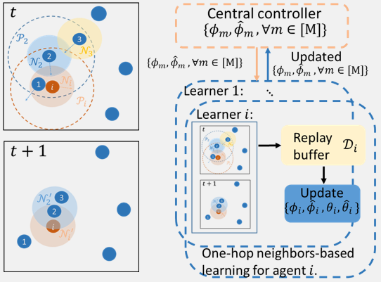
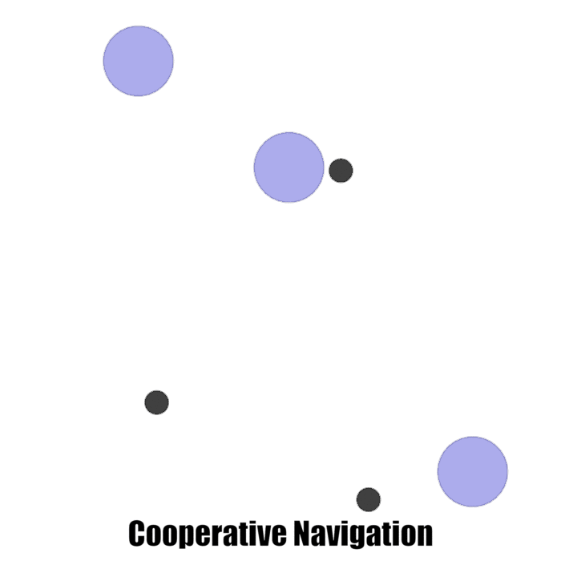
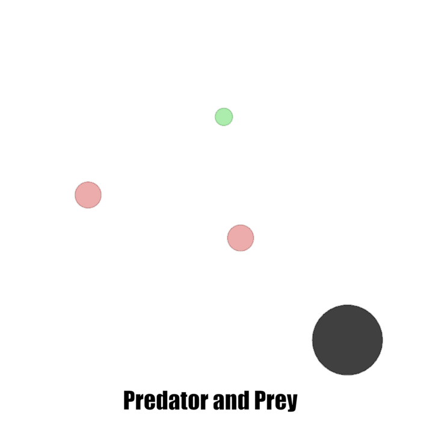
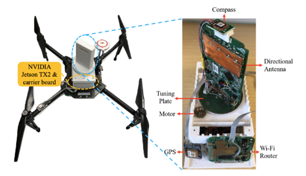
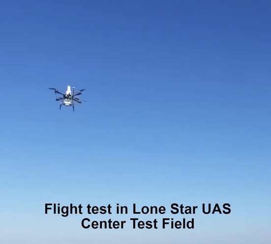
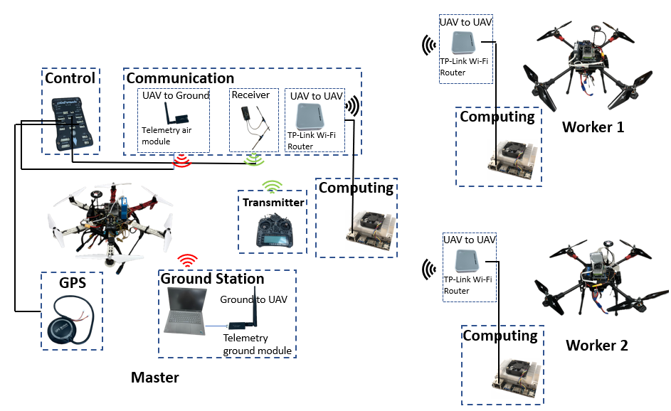
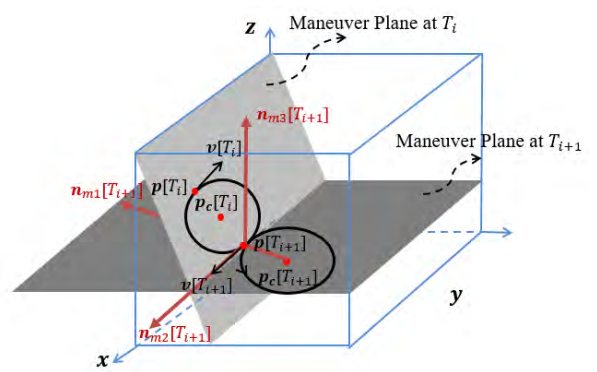
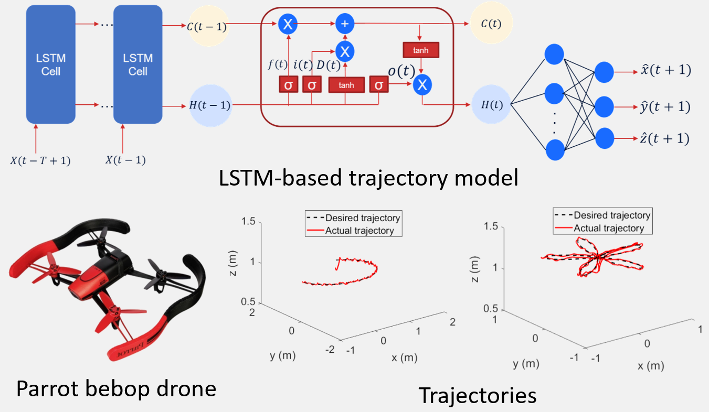
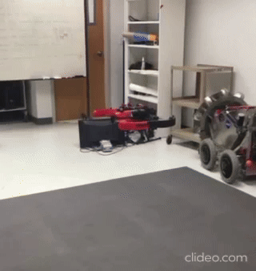

About
Welcome to my personal website! Here you'll find information about me, my recent news, projects I've worked on, and my publications. Feel free to explore and contact me if you have any questions or comments. I'm happy to meet people to discuss new ideas! 😊
I am an Intelligent Systems Engineer at The Boeing Company, developing intelligent solutions to improve manufacturing efficiency, product and service quality.
In 2023, I obtained my Ph.D. degree in Electrical and Computer Engineering from University of California San Diego and San Diego State University, advised by Prof. Junfei Xie and Prof. Nikolay Atanasov. I received my M.S. degree in Computer Science from Texas A&M University Corpus Christi in 2019 and B.S. degree in Prospecting Technology and Engineering from Yangtze University, China in 2017.
News
Publications
Journals
- B. Wang, J. Xie, N. Atanasov, Distributed Multi-Agent Reinforcement Learning with One-hop Neighbors and Compute Stragglers Mitigation, IEEE Transactions on Control of Network System, Nov. 2024.
- H. Zhang*, B. Wang*, J. Xie, K. Lu, Y. Wan, S. Fu, Exploring Networked Airborne Computing: A Comprehensive Approach with Advanced Simulator and Hardware Testbed, Unmanned Systems, Oct. 2023. (*Equal Contributions)
- B. Wang, J. Xie, K. Lu, Y. Wan, S. Fu, Learning and Batch-Processing Based Coded Computation with Mobility Awareness for Networked Airborne Computing, IEEE Transactions on Vehicular Technology, Dec. 2022.
- B. Wang, J. Xie, K. Lu, Y. Wan, S. Fu, On Batch-Processing Based Coded Computing for Heterogeneous Distributed Computing Systems, IEEE Transactions on Network Science and Engineering, Vol.8, pp:2438-2454, 2021.
- B. Wang, J. Xie, S. Li, Y. Wan, Y. Gu, S. Fu, K. Lu, Computing in the Air: An Open Airborne Computing Platform, IET Communications, Vol.14, pp. 2410-2419, 2020.
- J. Xie, Y. Wan, B. Wang, S. Fu, K. Lu, A Comprehensive 3-Dimensional Random Mobility Modeling Framework for Airborne Networks, IEEE Access, Vol.6, pp. 22849-22862, 2018.
Conference Proceedings
- B. Wang, C. Wang, D. Osipychev, Deep Reinforcement Learning for Airplane Components Failure Prognostics Full Cycle Automation, 2025 17th Annual Conference of the Prognostics and Health Management Society.
- B. Wang, J. Xie, K. Ma, Y. Wan, UAV-based Networked Airborne Computing Simulator and Testbed Design and Implementation, 2023 International Conference on Unmanned Aircraft Systems (ICUAS), Jun. 2023.
- B. Wang, J. Xie, N. Atanasov, DARL1N: Distributed Multi-Agent Reinforcement Learning with One-hop Neighbors, 2022 IEEE/RSJ International Conference on Intelligent Robots and Systems, Oct. 2022.
- J. Zhang, B. Wang, D. Wang, S. Fu, K. Lu, Y. Wan, J. Xie, An SDR-based LTE System for Unmanned Aerial Systems, 2022 IEEE International Conference on Unmanned Aircraft Systems, Jun. 2022.
- B. Zhou, J. Xie, B. Wang, Dynamic Coded Convolution with Privacy Awareness for Mobile Ad Hoc Computing, 2022 IEEE International Conference on Unmanned Aircraft Systems, Jun. 2022.
- B. Wang, J. Xie, N. Atanasov, Coding for Distributed Multi-Agent Reinforcement Learning, 2021 International Conference on Robotics and Automation (ICRA), Jun. 2021.
- D. Wang, B. Wang, J. Zhang, K. Lu, J. Xie, Y. Wan, S. Fu, CFL-HC: A Coded Federated Learning Framework for Heterogeneous Computing Scenarios, 2021 IEEE Global Communications Conference (Globecom), Dec. 2021.
- B. Wang, J. Xie, K. Lu, Y. Wan, S. Fu, Multi-Agent Reinforcement Learning Based Coded Computation for Mobile Ad Hoc Computing, 2021 International Conference on Communications (ICC), Jul. 2021.
- C. Douma, J. Xie, B. Wang, Coded Distributed Path Planning for Unmanned Aerial Vehicles, 2021 AIAA Aviation Forum, Jun. 2021.
- B. Wang, J. Xie, J. Chen, Data-Driven Multi-UAV Navigation in Large-Scale Dynamic Environment Under Wind Disturbances, 2021 AIAA Scitech Forum, Jan. 2021.
- B. Wang, J. Xie, Y. Wan, G. A. G. Reyes, L. R. G. Carrilo, 3-D Trajectory Modeling for Unmanned Aerial Vehicles, 2019 AIAA Scitech Forum, Jan. 2021.
- B. Wang, J. Xie, K. Lu, Y. Wan, Coding for Heterogeneous UAV-based Networked Airborne Computing, 2019 IEEE Global Communications Conference (Globecom) Workshop, Dec. 2019.
- B. Wang, J. Xie, S. Li, Y. Wan, S. Fu, K. Lu, Enabling High-Performance Onboard Computing with Virtualization for Unmanned Aerial Systems, 2018 International Conference on Unmanned Aircraft Systems (ICUAS), Jun. 2018.
Projects
Reinforcement Learning for Airplane Components Failure Prognostic
This project focuses on developing advanced reinforcement learning algorithms to predict and prevent failures in critical airplane components. By leveraging sensor data from aircraft systems, we aim to create intelligent prognostic models that can anticipate component degradation before catastrophic failures occur.
The approach combines deep reinforcement learning with time-series analysis to learn optimal maintenance strategies. The system continuously monitors component health indicators and learns from historical failure patterns to provide early warning signals and recommend proactive maintenance actions, ultimately improving aircraft safety and reducing operational costs.
Robotic Inkjet Livery Printing for Commercial Airplanes
This project automates the livery printing process for commercial airplanes. Our teams adapted the technology commonly used for flat surfaces to precisely apply billions of dots of ink to curved surfaces using a rotatable, eight-axis print head.
Traditionally, it takes three to 12 production days to paint liveries. With inkjet printing, the time required for image application will be reduced to just a couple of days, even for complex designs. It also provides better aerodynamics in flight, thanks to the elimination of paint steps and edges.

Multi-Agent Reinforcement Learning
This project investigates scalable multi-agent reinforcement learning in large scale environment with many agents. We proposed a method called Distributed multi-Agent Reinforcement Learning with One-hop Neighbors (DARL1N).



Networked Airborne Computing
The project aims to develop an enhanced open networked airborne computing platform to facilitate the design, implementation, and testing of an airborne computing platform that seamlessly integrates control, computing, communication, and networking.



Aircraft Trajectory Modeling and Navigation
This project models the trajectories of aircraft to capture the physical movement patterns of different aerial vehicles in real scenarios. We investigate a kinematic 3-D random mobility model for fixed wing aircraft and a LSTM model for quadrotors.


